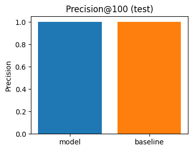
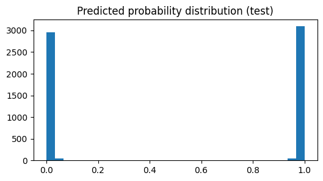

Content Opportunity Scoring — FlyRank Capstone
Abstract
This project tests a simple approach to rank pages that may need a content refresh using observable search-performance signals. A small starter dataset and a compact model are used to generate an evidence-backed ranked queue for review. The primary baseline ranks pages by recent decline in impressions; the model is a single Random Forest trained on a few safe features. Results are reported with precision@100 and top-100 recommended actions. This work is decision support only and does not claim to predict or cause search engine behavior.
Introduction / Problem Statement
Content owners benefit from a prioritized list of pages to review. This capstone asks: can available search-performance signals help rank pages that appear to need review or refresh? The goal is a simple, reproducible prioritization to guide human decisions.
Data
Analysis uses the anonymized starter CSV included in the repo (data/raw/content_refresh_anonymized.csv). The larger warehouse exists on Hugging Face but is not required for this simple capstone. All identifiers are pseudonymized.
Methodology
A baseline ranks pages by recent decline in impressions (last 30d vs previous 30d). A single Random Forest model is trained (group-split by client_id) to predict a proxy label (trend_direction == 'down') using a small set of safe features: impressions, sessions, ctr, avg_position (cleaned), word_count, age, and the computed decline. The model's predicted probability is used as a score.
Results
The notebook reports test precision@100 for both baseline and model. Charts below show the precision comparison and model score distribution.


Ranked Recommendations
The notebook exported a CSV with the top recommendations (work/outputs/capstone_recommendations_top100.csv). Each row includes an anonymized content_id, score, a short reason string, and a recommended action (Refresh, Review, Monitor).
Limitations & Honest Framing
- Label is a proxy (trend_direction) derived from the same snapshot; this is a pragmatic choice for a short capstone.
- Small feature set and simple model — suitable for prioritization, not causal claims.
- Does not claim to predict or affect Google rankings.
Reproducibility
Notebook: work/notebooks/capstone_search_intelligence.ipynb (executed). Outputs saved under work/outputs/. To reproduce locally: open the notebook and run it. The notebook uses only the starter CSV included in the repo.
Acknowledgments & Data Credit
Built on the FlyRank ML Internship dataset. See https://flyrank.ai for project context and https://huggingface.co/datasets/FlyRank/internship-warehouse for the gated warehouse release.